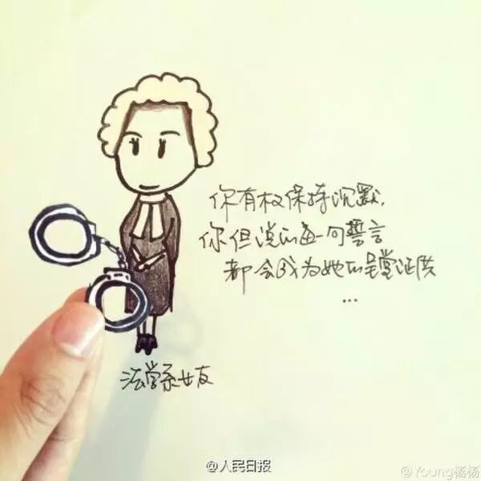
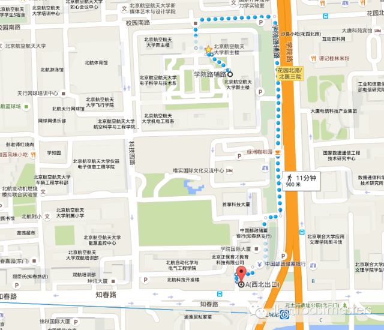

Time: 19:30-21:30, Friday,May 20.
Venue: Room B208, New Main Building, Beihang University.
520
Toastmaster: Keven
Do you know what day is it today? For most young people in China, do think that May 20th has some important meaning. It's a romantic and lovely day. People should celebrate it by making confessions or doing something unforgettable. How do you think of that? Will you make a confession today? Come here and share your opinion.

Table topic master: Cicily
In the past, we would talk about picking up skills, like how to talk with a girl, how to flirt with a girl or how to manage a relationship. Tonight, our talented Cicily has prepared a bunch of questions to talk about how to make a confession. Hi, Li Lei, will you have a try?
Competent Communication Projects (CC)
A Mistake I Once Made (CC-2)
Speaker: Channing
Well, I make mistakes all the time. In the last past few years, I think mistakes are something I can not accept. I fell frustrated. I see it as a bad thing. Because in our education procedure, a convention is "Success good, failure bad."
But for me right now, I do think mistakes can help us a lot. Because we are not perfect, the first thing we do, is trying. We want to become experienced. How? Keep trying. How to keep trying? Enjoy your mistakes.
Wish List before Graduation(CC-3)
Speaker: Bean
"Ah, Graduation, you are like the Vega, while I'm the Altair. I love you but I can't have you."
---------to all who are searching for their PhDs
Graduation season is a great period of time. For me, what did I do for my last graduation:
1. Got drunk many times
2. Thrown into the sea once
3. Made a speech before my classmates
Well, what about Bean's list? Here we go.
If I Were a Boy (CC-8)
Speaker: KIKI
This is a tough world. Sometimes, girl may act like a boy. Do you guys remember in Kiki's first speech, what did he do? Oh I'm sorry, what did she do. Yeah, she kicked Bowen's ass. Since then, it would be really dangerous to go up stairs with Kiki.
By the way, Kiki, you have a little grammar mistake in you title. 'if' and 'were' are not suitable here. Because this is not subjunctive mood, you are telling the truth(Pure smile).
What is Toastmasters?
Toastmasters International (TI) is a nonprofit educational organization that operates clubs worldwide for the purpose of helping members improve their communication, public speaking, and leadership skills.
You can find us by the following map of Beihang University.

https://mp.weixin.qq.com/s/catrnAcToD1JZ9YD7Xk4eg
本页为抢救式本地归档，图文已永久保存。